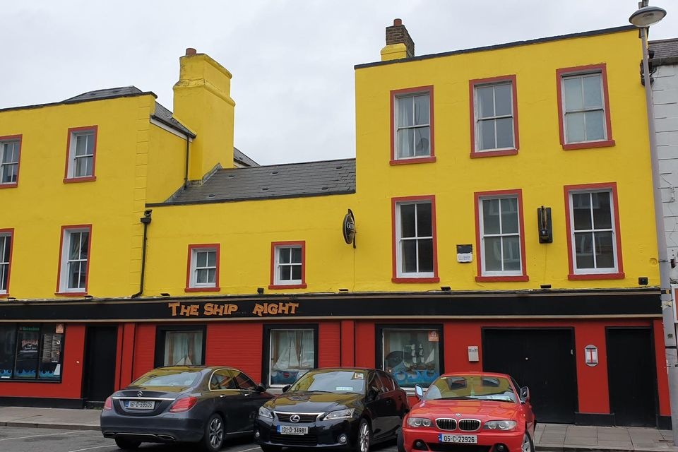
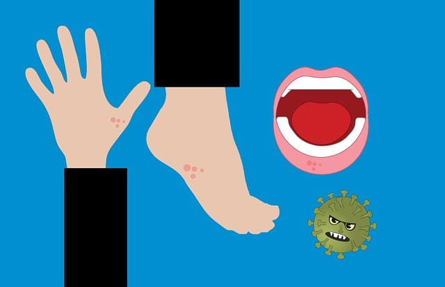

Gardaí investigating major fire at Dublin pub earmarked for homeless families
Three people have been arrested in connection with an arson attack on a former pub in Dublin on New
Year's Eve.
The Shipwright pub and guesthouse on Thorncastle street, Ringsend was being renovated to provide
emergency accommodation for homeless families.
Gardaí carried out four searches in Dublin this morning.
Two men in their 30s and 50s, and a woman in her 20s were arrested on suspicion of arson for
offences under the Criminal Damage Act.
They are being detained under section four of the Criminal Justice Act and can be questioned for up
to 24 hours.
It brings to ten the total number of arrests in connection with 18 arson attacks on properties all
over the country since January of last year. Read more > > >
US Election
The US Supreme Court reluctantly takes centre stage in the 2024 White House race, as it decides
whether Donald Trump should be barred from running again for president.
The nation's highest court is to hear arguments in the most consequential election law case since it
halted the Florida vote recount in 2000 with republican George W Bush narrowly leading democrat Al
Gore.
The question before the nine justices is whether Mr Trump is ineligible to appear on the Republican
presidential primary ballot in the state of Colorado because he engaged in an insurrection, the 6
January 2021 assault on the US Capitol by his supporters.
Colorado's Supreme Court, citing the 14th Amendment to the Constitution, ruled in December that Mr
Trump, the frontrunner for the 2024 Republican nomination, should be barred from appearing on the
ballot because of his role on 6 January.
Section 3 of the 14th Amendment bars anyone from holding public office if they engage in
"insurrection or rebellion" after once pledging to support and defend the Constitution.
The amendment, ratified in 1868 after the Civil War, was aimed at preventing supporters of the
slave-holding breakaway confederacy from being elected to Congress or from holding federal
positions. Read More > > >
Chinese Year of the Dragon
Though incredibly complex, the Chinese zodiac calendar is best described as a 12-year cycle
represented by 12 different animals, in this order: Rat, Ox, Tiger, Rabbit, Dragon, Snake, Horse,
Goat, Monkey, Rooster, Dog and Pig.
Your personal zodiac animal sign is determined by your year of birth, meaning 2024 will welcome
plenty of baby dragons to the world. Those born in 2025 will be snakes, and so on.
Followers believe that for each Chinese zodiac sign, luck will depend largely on the positions of
the Tai Sui - a collective name for the stellar deities thought to rotate parallel to and in the
opposite direction of Jupiter.
Different geomancy masters may interpret the data differently, but there is usually a consensus on
what the year means for each zodiac animal based on the positions of the stars.
They may become a sage for their friends, and Lowe adds that there's also a good chance for them to
gain wealth or see their wealth expand this year. But, she warns: “As long as they focus now on
exactly what they want out of the year, there's no point in dilly-dallying around it, they need to
know what they want out of the year.”
And while it's not marked as a year of love for the dragon, there may be a chance for people born in
the year of the dragon to spark a new romance come September.
Read More > > >
South London's Acid Attack
London police are searching for a man suspected of throwing a corrosive substance on multiple
victims including a woman and two children in a “horrific incident” on Wednesday night.
In a statement, Metropolitan Police said the suspect was seen fleeing the scene in south London's
Clapham district following the attack. No arrests have been made.
Nine people were wounded, including three adults who helped the initial victims and three responding
police officers who were hospitalized with minor injuries, police said.
“We will update as soon as we know more about their conditions,” Detective Superintendent Alexander
Castle said in a statement.
Castle said an investigation had been opened and tests were ongoing to determine what the suspected
corrosive substance was.
“We are drawing on resources from across the Met to apprehend this individual and work is ongoing to
determine what has led to this awful incident,” he said.
Local councillors Alison Inglis-Jones and Ben Curtis thanked emergency services for rapidly
cordoning off the scene and said they were "in total disbelief and shock at what has happened".
Read More > > >
Mauritius Flooding Ease
Mauritius lifted its highest weather alert and eased a nationwide curfew Tuesday after a cyclone
battered the Indian Ocean island, causing heavy flooding and extensive damage in the capital city
and other parts of the country.
The nearby French island of Reunion also was assessing the aftermath of Tropical Cyclone Belal.
Belal ripped through the region off the east coast of Africa on Monday and early Tuesday but had now
passed both islands and was heading out to the Indian Ocean, the Mauritius Meteorological Services
said.
The Mauritius government said that the head of the meteorological services had stepped down after
his institution was criticized for not giving adequate warning about how severe the impact of Belal
would be.
Roads in the Mauritius capital, Port Louis, and elsewhere turned into raging rivers on Monday as
Belal brought torrential rains and high winds. Some people climbed onto the roof of their cars and
clung on, according to videos published by Mauritius' L'Express newspaper. Motorists who had escaped
from cars were seen being pulled to safety by others.
Read More > > >

Westmeath Man Dies of Measles
A man in his late forties has died after he contracted measles, the first such case in Ireland this
year.
The man, who comes from the Westmeath area, is believed to have travelled to the Birmingham region
of the UK recently.
There have been a outbreaks in this area and the man was diagnosed after he presented to a hospital
in the Midlands when he returned to Ireland.
Questioned last night by the Irish Independent, the HSE issued a statement saying the HSE Health
Protection Surveillance Centre has been notified of the death “of an adult “with confirmed measles.
This is the first confirmed measles case notified in Ireland in 2024.
It said that HSE public health teams, along with the HSE Measles National Incident Management Team
(IMT), are taking all necessary public health actions in relation to the case.
Read More > > >